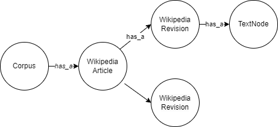

Graph-Creator¶
In order to build your first Graph using CAG, you have to follow the following steps:
Define your Graph Ontology.
Define which nodes and edges are already defined by CAG (as a Python Class).
Create the nodes and edges specific to your datasource(s) that are not defined by CAG.
- Create your GraphCreator:
Define the relations between the nodes.
Implement the init_graph and update_graph.
1. Define your Ontology¶
We assume we have a set of Wikipedia Article Revisions where the data’s dataframe looks as follows:
2. Define Graph Elements¶
CAG has predefined Nodes and Edges. You can access them via: cag.graph_elements.nodes and cag.graph_elements.relations.
Based on the Ontology defined above, CAG has already the TextNode, WebResesource node, and ImageNode. But it is missing the Wikipedia-specific nodes and edges: WikipediaArticle and WikipediaRevision.
3. Create Graph Elements¶
We create these nodes as Python Classes (as required by PyArango):
from cag.graph_elements.nodes import GenericOOSNode, Field
class WikipediaArticle(GenericOOSNode):
_fields = {"name": Field(), "language": Field(), **GenericOOSNode._fields}
class WikipediaRevision(GenericOOSNode):
_fields = {
"revision_id": Field(),
"revision_timestamp": Field(),
**GenericOOSNode._fields,
}
4. Create Graph Creator¶
class MyGraphCreator(GraphCreatorBase):
_name = "WikipediaRev"
_description = "Wikipedia revisions"
### your code here: Add __init__ Here ##
_WIKIPEDIA_ARTICLE_NODE = WikipediaArticle
_WIKIPEDIA_REVISION_NODE = WikipediaRevision
_HAS_A_RELATION = HasA
# DEFINE RELATIONS
_edge_definitions = [
{
"relation": _HAS_A_RELATION,
"from_collections": [
GraphCreatorBase._CORPUS_NODE_NAME,
_WIKIPEDIA_ARTICLE_NODE,
_WIKIPEDIA_REVISION_NODE,
],
"to_collections": [
GraphCreatorBase._TEXT_NODE_NAME,
GraphCreatorBase._CORPUS_NODE_NAME,
_WIKIPEDIA_ARTICLE_NODE,
_WIKIPEDIA_REVISION_NODE,
],
},
]
### your code here: Add init_graph(self) here ##
def init_graph(self):
print(self.corpus_file_or_dir)
wiki_files = glob(self.corpus_file_or_dir)
print("there are {} wiki titles".format(len(wiki_files)))
node_corpus = self.create_corpus_node(
key="WikipediaRev",
name=MyGraphCreator._name,
type="social_media",
desc=MyGraphCreator._description,
created_on=self.now,
timestamp=self.now,
)
for wiki_file in wiki_files:
page_revs_df = pd.read_parquet(wiki_file)
page_revs_df["timestamp_str"] = page_revs_df["timestamp"]
page_revs_df["timestamp"] = pd.to_datetime(
page_revs_df["timestamp"], infer_datetime_format=True
)
page_revs_df = page_revs_df.sort_values(by=["timestamp"])
## create wikipedia page
page_name = page_revs_df["page"][0]
language = page_revs_df["lang"][0]
# upsert_node generic to add nodes
node_wikiarticle = self.upsert_node(
MyGraphCreator._WIKIPEDIA_ARTICLE_NODE,
{
"name": page_name,
"lang": language,
"timestamp": page_revs_df["timestamp"].max(),
},
["name"],
)
## create wikipedia link using upsert_edge
self.upsert_edge(
MyGraphCreator._HAS_A_RELATION, # relation name
node_corpus, # from
node_wikiarticle, # to
{"timestamp": page_revs_df["timestamp"].max()},
)
for _, revision in page_revs_df.iterrows():
# WikipediaRevision
revision_timestamp = revision["timestamp"]
revision_id = revision["page"] + revision["timestamp_str"]
node_revision = self.upsert_node(
MyGraphCreator._WIKIPEDIA_REVISION_NODE,
{
"rev_id": revision_id,
"rev_timestamp": revision_timestamp,
"timestamp": revision_timestamp,
},
alt_key=["rev_id"],
)
self.upsert_edge(
MyGraphCreator._HAS_A_RELATION, # relation name
node_wikiarticle, # from
node_revision, # to
{"timestamp": revision_timestamp},
)
# TextNode
txt = revision["content"]
node_text = self.create_text_node(txt)
self.upsert_edge(
MyGraphCreator._HAS_A_RELATION,
node_revision,
node_text,
{"timestamp": revision["timestamp"]},
)
return self.graph
# -------------------------------------------
### add update_graph here ##
def update_graph(self, timestamp):
return self.init_graph()
# -------------------------------------------
You can then run your GC as follows:
MyGraphCreator(
"path/to/your/data",
config,
initialize=True,
load_generic_graph=False, # do not create all CAG's graph elements - just the ones defined in my GC
)